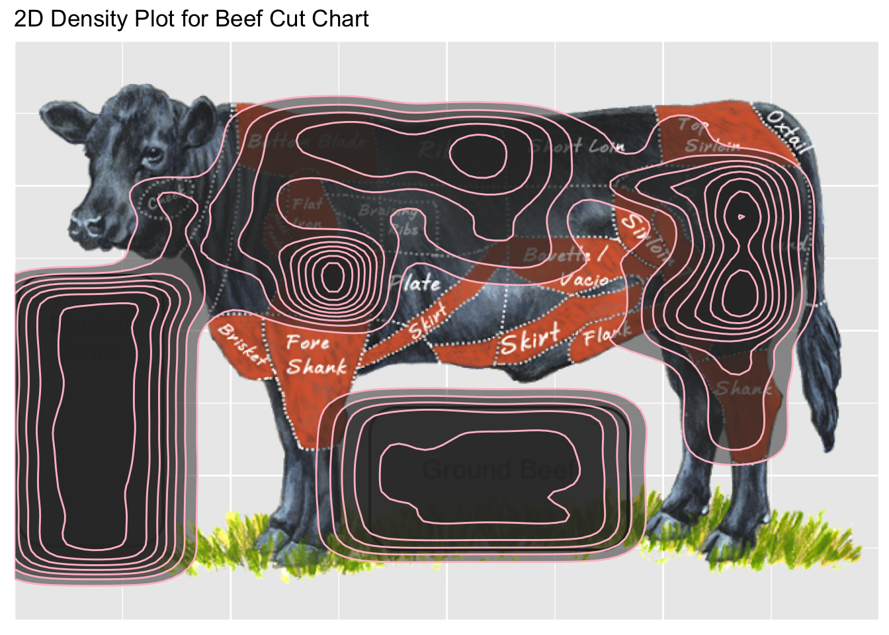

In Data Science I, we’ve learned mutiple techniques dealing with data. For instance, ggplot2 and tidyverse are very commonly used packages for data visualization. In the midterm project, we were requested to finish a data visualization job with shinny app. The datasets are about the environment impacts of different cuts of beef. It takes me a very long time to figureout a better way other than bar plot: 2D density plot.
In this midterm project, I used learned techiniques and knowlege, but also new stuff from self-study. Now let’s talk about my masterpiece!
It might first come in mind that how could 2D density plot show the environment impact? It actually does and from my perspective, pretty nicely done!
First of all, is to deal with the data. The dataset is called carcass, and I cleaned the data a bit for easier usage later.
carcass<- read.csv('file/carcass_clean.csv')
head(carcass,10)## cut total_weight protein.lb Kcal.lb water.rate co2.emision
## 1 Blended Burger 379 80 1120 6.355078 102.959
## 2 Ground Beef 250 112 1392 6.355078 102.959
## 3 Fat 100 0 4050 6.355078 102.959
## 4 Bones 80 NA NA 6.355078 102.959
## 5 Round 64 96 760 6.355078 102.959
## 6 Chuck Roll 60 76 1200 6.355078 102.959
## 7 Bone-in Ribeye 48 108 1224 6.355078 102.959
## 8 Bone-in Strip 36 92 1040 6.355078 102.959
## 9 Top Round 32 100 760 6.355078 102.959
## 10 Sirloin 28 88 960 6.355078 102.959
## land.use
## 1 77
## 2 77
## 3 77
## 4 77
## 5 77
## 6 77
## 7 77
## 8 77
## 9 77
## 10 77Because I never find a package that has already implemented with an interactive cow map, so some of the steps are done manually. In order to get a cow map, I have to first put the cow map in the plot. I checked online a lot and found that 2D density plot can be easily applied on geographic maps with build-in longitude and latitude values.
All you have to do is find the location, give it a value, Woa! you have a nice density plot. However, there’s no pre-existed cow map package.
So to plot a 2D density plot on a cow, I have to find another way round. First, is to have the cow map appear in R. I did not find a way to “plot” the cow, but to either draw the cow or put the cow into the plot as background.
I read in the picture use the png package, and plot with cowplot package. Unfortunately, it is just a picture and I could do nothing with it. As you can see, the background is white just, if you are familiar with ggplot2, the default plot background is always grey.
library(png)
library(cowplot)
im <- readPNG("file/cow.png")
beefcut <- ggdraw()+
draw_image(im)
beefcutI used the other option. I made the cow map a background of my ggplot, using grid package. And it worked! The background is grey!
library(grid)
library(ggplot2)
ggplot()+
annotation_custom(rasterGrob(im,width = unit(1,"npc"), height = unit(1,"npc")), -Inf, Inf, -Inf, Inf)So I solved the picture issue, how to plot on it? Here comes the manmual part. I set the x and y scale from 0 to 100 for this background, and worked with my teammates with locating all the cuts into file vec.csv.
ggplot()+
annotation_custom(rasterGrob(im,width = unit(1,"npc"), height = unit(1,"npc")), -Inf, Inf, -Inf, Inf)+
scale_x_continuous(expand=c(0,0), lim=c(0,100)) +
scale_y_continuous(expand=c(0,0), lim=c(0,100))vec<-read.csv("file/vec.csv")
head(vec,10)## cut x1 x2 y1 y2
## 1 Blended Burger 0.50 18.0 9.0 58.0
## 2 Ground Beef 38.00 70.0 12.5 37.5
## 3 Round 81.25 88.0 50.5 69.5
## 4 Chuck Roll 25.50 41.5 62.5 87.5
## 5 Bone-in Ribeye 41.60 62.5 63.0 87.0
## 6 Bone-in Strip 50.00 62.5 58.0 87.5
## 7 Top Round 81.25 88.0 69.5 79.0
## 8 Sirloin 74.50 79.5 46.0 88.0
## 9 Brisket 32.00 41.0 53.0 63.0
## 10 Should Clod 35.00 39.0 54.0 64.0As I mentioned, the cow map is not geographic map, and there’s no cow-related package for me to use. To plot 2D density plot on this blank plot (the cow map is just a background), I need to create points on the districts that we manually measured. To begin with, the carcass_clean.csv dataset needs a further change. The package we learned such as tidyverse are really useful here. Tidyr and pipe within tidyverse are used below.
library(tidyverse)
carcass2<-
# alter the original environment impacts to per pound of beef cut and chage units.
# %>% sign is pipe, means next step, straight forward logic.
carcass %>%
# mutate adds new columns with the value you want
mutate(water.1000gal.lb = water.rate/total_weight*1000,co2e.kg.lb = co2.emision/total_weight*1000*0.454,landuse.bs.lb = (land.use/total_weight*4047)/420) %>%
# select displays and gives the colums you want
select(cut, total_weight, protein.lb, Kcal.lb,water.1000gal.lb,co2e.kg.lb,landuse.bs.lb)
carcass4 <- carcass2 %>%
# magnify weight value for better density plot
mutate(tot_weight_10 = total_weight*10, tot_weight_100 = total_weight*100)
head(carcass4,10)## cut total_weight protein.lb Kcal.lb water.1000gal.lb
## 1 Blended Burger 379 80 1120 16.76802
## 2 Ground Beef 250 112 1392 25.42031
## 3 Fat 100 0 4050 63.55078
## 4 Bones 80 NA NA 79.43847
## 5 Round 64 96 760 99.29809
## 6 Chuck Roll 60 76 1200 105.91797
## 7 Bone-in Ribeye 48 108 1224 132.39746
## 8 Bone-in Strip 36 92 1040 176.52994
## 9 Top Round 32 100 760 198.59619
## 10 Sirloin 28 88 960 226.96707
## co2e.kg.lb landuse.bs.lb tot_weight_10 tot_weight_100
## 1 123.3335 1.957652 3790 37900
## 2 186.9735 2.967800 2500 25000
## 3 467.4339 7.419500 1000 10000
## 4 584.2923 9.274375 800 8000
## 5 730.3654 11.592969 640 6400
## 6 779.0564 12.365833 600 6000
## 7 973.8205 15.457292 480 4800
## 8 1298.4274 20.609722 360 3600
## 9 1460.7308 23.185938 320 3200
## 10 1669.4066 26.498214 280 2800As shown above, water.1000gal.lb means 1000gallons of water usage per pound of the cut of beef, so does the co2 emmision, land usage columns etc. These values will then become the number of points randomly generated on the blank plot. Geom_density2d can accept these generated points. For example, Round cut uses 99.29 kgallons of water per pound, recall the location values of round cut, 41.60 62.5 63.0 87.0 will give us a square on the cow map, 99 points will be randomly generated in this square. In order to generate all these points I have to write a function within the function. How to write a function and using for loop are important topics we covered in classes.
# The first function rwloc is used to calculate weight, it generate random location values(newx,newy) within the square I restricted (x1,x2,y1,y2)
rwloc <- function(cutname,x1,x2,y1,y2){
# cutname is going to be the cutnames from vec.csv, x1 x2 y1 y2 are the corners of the square we manually measured.
c4<- carcass4[rep(rownames(carcass4),carcass4$tot_weight_100),]
c5<- c4 %>%
# pipe and tidyr again! filter select coditions you set.
filter(cut == as.character(cutname))
c5$newx <- sample(x1:x2,nrow(c5),replace = TRUE)
c5$newy <- sample(y1:y2,nrow(c5),replace = TRUE)
return(c5)
}
# The second function utilize the first function to repeat this step for the value of weight
manual <- function(vec){
# create empty data.frame
a<- data.frame()
for (i in 1:nrow(vec)){
b<- rwloc(vec[i,1],vec[i,2],vec[i,3],vec[i,4],vec[i,5])
# rbind here adds new rows into the dataframe.
a<- rbind(a,b)
}
return(a)
}
weight <- manual(vec)
weight[1:10,6:11]## co2e.kg.lb landuse.bs.lb tot_weight_10 tot_weight_100 newx newy
## 1 123.3335 1.957652 3790 37900 7.5 13
## 2 123.3335 1.957652 3790 37900 10.5 47
## 3 123.3335 1.957652 3790 37900 5.5 53
## 4 123.3335 1.957652 3790 37900 12.5 40
## 5 123.3335 1.957652 3790 37900 9.5 32
## 6 123.3335 1.957652 3790 37900 5.5 29
## 7 123.3335 1.957652 3790 37900 9.5 14
## 8 123.3335 1.957652 3790 37900 17.5 14
## 9 123.3335 1.957652 3790 37900 14.5 36
## 10 123.3335 1.957652 3790 37900 13.5 14nrow(weight)## [1] 114975As shown, we generated repeated rows of values but the location value newx and newy are different. The newx and newy will give us randomly located points.
With the dataset weight of 114975 rows, it’s all repeated points with differnt location value. So I can plot it using ggplot on the cow map.
ggplot(data=weight,aes(x = newx, y = newy))+
annotation_custom(rasterGrob(im,width = unit(1,"npc"), height = unit(1,"npc")), -Inf, Inf, -Inf, Inf)+
scale_x_continuous(expand=c(0,0), lim=c(0,100)) +
scale_y_continuous(expand=c(0,0), lim=c(0,100))+
stat_density2d(alpha = 0.5, geom = "polygon", color = "pink")+
# the 0 to 100 scale is for us to measure the cuts, as the final product, I don't need them
theme(axis.title.x=element_blank(),
axis.text.x=element_blank(),
axis.ticks.x=element_blank(),
axis.title.y=element_blank(),
axis.text.y=element_blank(),
axis.ticks.y=element_blank())+
# give my plot a label
labs(title = "2D Density Plot for Beef Cut Chart")
As the result, we could observe that, ground beef, blended burger, round part, chuck part and rib part has the highest beef yield. The plot shown contains every cut.
I personally think this project is very meaningful, it drives me to be creative, and this 2d density plot was the only cow plot among all the midterm products. I think it’s very unique. It’s a little bit sketchy and not good-looking enough, but I utilize the package like tidyr, pipe, ggplot2 and plotly (not included here) learned in class, and techniques such as function, for loop are vital in my project. Apart from these learned knowledge, the project made me learned new pakcages such as grid, cowplot (actually there are tens more but sadly not useful to be applied in my project). For this project, I am learning and reviewing at the same time, it’s fun and challenging but with the product we had, I am more than pround of myself and my teammates Danni and Eddie. The final product can be find here. You can play around with it!